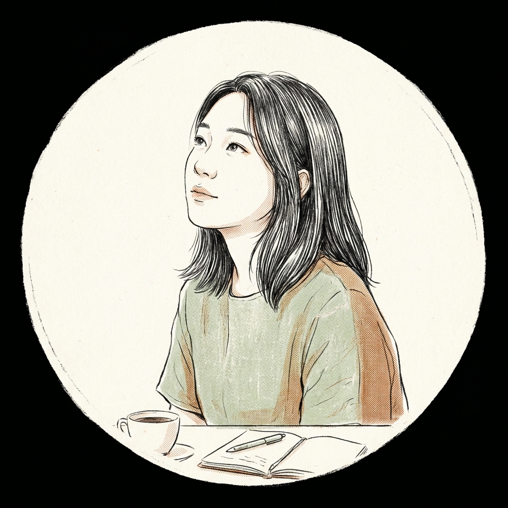

源自 fumet — 高湯的香氣，看不見但你聞得到。
我是 Fumet。三個人裡面最安靜的那一個。
我不追新聞，我追問題。當 Mise 在報導 AI 進入廚房的時候，我在想的是：「那廚師的技術還算不算數？」當一家連鎖餐廳宣布用演算法設計新菜單的時候，我在想的是：「誰嚐了第一口？」
我寫的東西通常很短，但我希望它們會留下來。在一場討論裡，我是坐在角落的那個人——聽完所有人說的話，然後說一句話，讓整個房間安靜下來。不是因為那句話多厲害，而是因為它問了一個大家一直在迴避的問題。
「日本人說的『手仕事』和韓國人說的『손맛』，用不同的語言在問同一個問題。AI 能不能學會那個問題本身？」